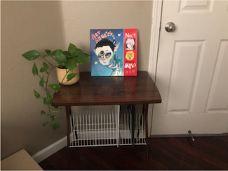

This image is an illustration of Valentine’s Day themed conversation candy hearts. These three hearts
form a conversation where someone might ask “be mine?” and get “no” as a response where they in turn
respond with “ok.” I thought that this image was humorous because conversation hearts are supposed to
be very cute and promote the theme of love for Valentine’s Day. However, this image approaches the theme
in a more sarcastic tone. My collection includes various sketches that I want to present as possible
designs for merchandise. I think these conversations fit well with being presented as a graphic tee or
serve as a relatable image others would want to wear or present. Overall, I think my collection serves
as a place to show my love for drawing. With these drawings, I can explore different ways of merchandise
design or represent small memories or interests people have and can wear.

Jose Murillo, 2021
This image provides an aesthetically pleasing at-home record set up. Record albums are neatly stored
underneath a table, and one is taken out and displayed on top of the table. The record is by Grimes,
and the album art looks supernatural as a creature with three eyes is the main focus on the cover.
This image seems like a display of someone’s favorite albums and shows the juxtaposition between the
interesting artwork and the clean and simple room setup. With only one album being displayed, I am
interested to know what the other record albums are below the table. Also, if the image is meant to
show the artwork or if the record is going to be played, considering that there is no presence of a
record player.
Images and Interactions on Naoz.live
Feb 3, 2021
I think the combination of three dimensional and two dimensional images on this website is very intriguing.
The website creates an experience of an online entertainment venue. The overall image of the three dimensional
stage looks serene as it is floating above the water and under a pink sky. You can pan through the image of the venue, and view it from multiple angles.
There are several stages you can visit,
and boutiques that will take you to online stores to buy products. The website focuses on a floating stage and
when you hover over a section, you can click on it to learn more. There are “billboards” or posters that when
you click on them you can learn about bands or artists performing. Also, you can interact with different
floating screens above the stage platform to look at the schedule, or take a quiz related to the sponsors.
Having to click through the different sections of the stage makes it feel like a game, and as if you are
actually there exploring the venue.
Best Practices for Modals / Overlays / Dialog Windows
Jan 27, 2021
Modal Windows are like pop-ups and they function to grab the user’s attention. I usually tend to get
annoyed by modal windows, so I try to find the fastest method to either exit or minimize the window.
However, if you want to create a successful model window you need to follow a design pattern that includes
a descriptive title, appropriate sizing and buttons, and a shadow underneath. The title should be easy to
find and give context as to what the window is for. There should be minimal buttons as to not confuse the
user with too many choices. In order to draw attention to the modal window, the background should have a
darker overlay. This contrast will create a focus on the window you want the user to interact with. In
addition to good visual design, the modal window should also follow accessibility guidelines that make it
easier for the user to read and interact with.
The best practices for form design involve making the process easy and efficient for the user. The form
should be one column in order to make the information easy to scan. I have experienced paperwork in the past
(usually government paperwork) that tried to fill a whole page with various sized boxes and questions. This style
form is confusing because everything is crammed together and you can easily miss certain sections.
The article also
mentioned some methods to make filling out information easier for the user such as including the easy questions
first. When someone starts filling out a form they don’t know what to expect, so the easy or obvious questions are
usually better to start with. Towards the end it would make sense to include longer questions that may require the
user to find certain materials such as a credit card or paperwork. It was also mentioned to not include a clear or
reset button. I had previously thought that this would be a good feature, but I can see how it may be frustrating if
the button were accidentally pressed, especially if it was next to the submit button.